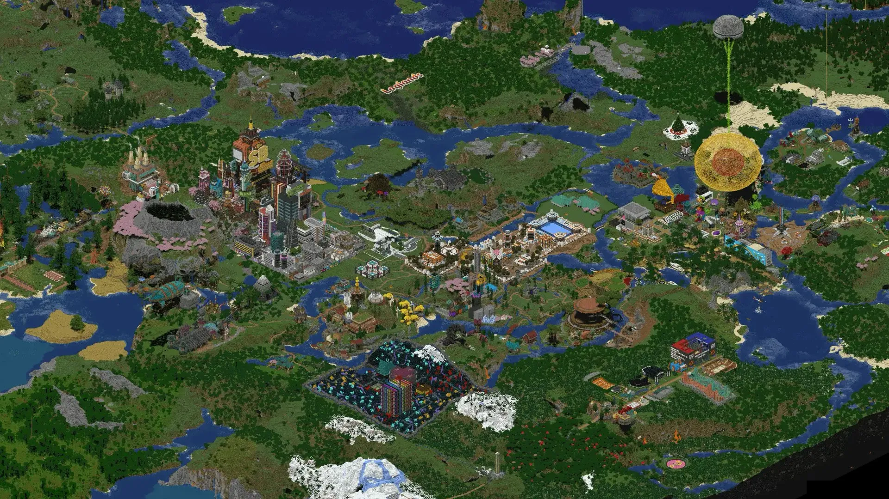
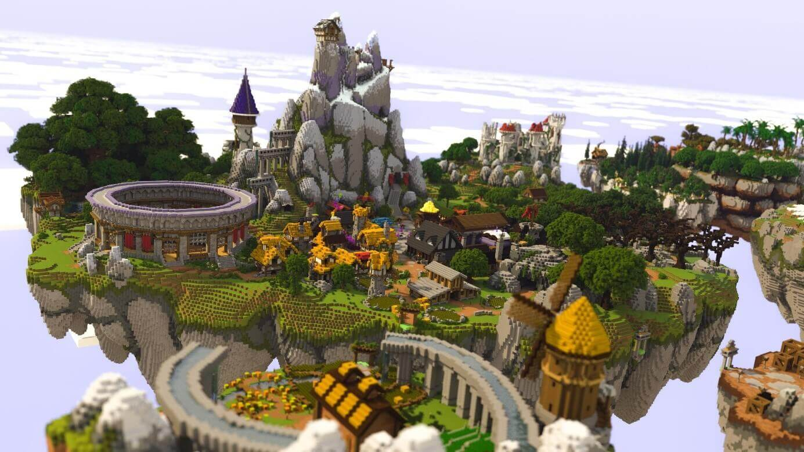

Autors: Jānis Bašēns
Studenta ID: jb26076
Minecraft ir Sandbox spēle, kas domāta jebkuram vecumam un cilvēkam. Spēles izskats ir unikāls, jo visa pasaule eksistē kantainos blokos, kur iespējams izpētīt pasauli ar kalniem, lieliem okeāniem, milzu tuksnešiem u. c. lietām, jo spēli var mainīt ar modiem.
Minecraft pasaulē spēlētājs var darīt gandrīz visu, ko vēlas. Var būvēt mājas, pētīt alas, cīnīties ar monstriem un vākt dažādus resursus. Spēli var arī papildināt ar modifikācijām jeb modiem.
Minecraft sākumā spēlētājs parādās nejaušā vietā lielā pasaulē. Pirmais uzdevums ir savākt koku, no kura var izveidot pirmos instrumentus. Pēc tam var iegūt akmeni, dzelzi un citus resursus. Spēlētājs pats izvēlas, ko darīt, jo Minecraft nav viens veids, kā spēlēt.
Minecraft pasaulē ir daudz bīstamu radību, no kurām jāuzmanās. Īpaši bīstami ir creeperi, zombiji un skeleti. Creeperi var klusi pieiet spēlētājam un eksplodēt. Jāuzmanās arī no lieliem kritieniem, lavas un dziļām alām.
Lai izdzīvotu pirmajās spēles dienās, vajadzētu pēc iespējas ātrāk uzbūvēt patvērumu. Tajā var paslēpties no monstriem un droši pārnakšņot. Ir svarīgi arī savākt ēdienu, izveidot instrumentus un iegūt bruņas. Vēlāk spēlētājs var uzbūvēt lielāku māju, fermu un izveidot labākus ieročus.
Minecraft nav noteikts tikai viens spēles mērķis. Spēlētājs var būvēt, izpētīt pasauli, vākt resursus vai spēlēt kopā ar draugiem. Tomēr viens no galvenajiem spēles mērķiem izdzīvošanas režīmā ir atrast Pūķi un to nogalināt. Pēc tā nogalināšanas spēli joprojām var turpināt un veidot jaunus projektus.
Specifiska daļa no Minecraft, ko var darīt, ir veidot milzīgas būves un pilsētas. Daži spēlētāji pavada simtiem stundu, lai izveidotu ļoti detalizētas būves.


Minecraft treileris:
Stock minecraft video
Ja vēlies uzzināt vairāk par Minecraft, vari apskatīt
Minecraft Wiki
.
Ja vēlies nopirkt, dodies šeit.